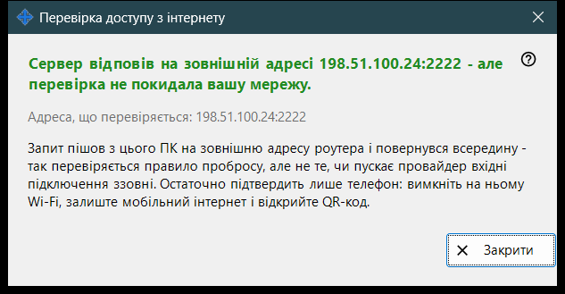
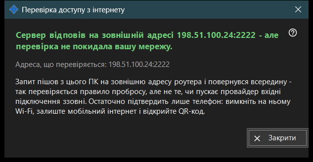

Перевірка доступу з інтернету
Призначення
З цього ПК перевіряє, чи відповідає спільна адреса як SFTP-сервер. Відкривається кнопкою «Перевірити доступ з інтернету» головного вікна й показує адресу, що перевіряється, висновок і пояснення.


Порядок дій
- Відкрийте вікно: воно показує адресу й одразу починає перевірку.
- Дочекайтеся заголовка результату.
- Прочитайте рядок із подробицями під ним.
- Якщо результат не остаточний, повторіть перевірку з телефона при вимкненому Wi-Fi і ввімкненому мобільному інтернеті.
- Натисніть «Закрити».
Елементи вікна
Адреса, що перевіряється
«Адреса, що перевіряється: ..» показує хост і порт. Поки триває перевірка, вікно пише «Перевірка ..». Якщо адреса невідома, результат - «Адресу з інтернету ще не визначено.»; некоректна адреса дає «Адреса некоректна.».
Висновки
«SFTP-сервер доступний» - порт відповів банером SFTP. «Порт відкрито, але SFTP не відповів» - на порту щось прослуховується, але це не наша програма; перевірте, що правило на роутері веде на цей ПК і на порт роздачі. З'єднання, закрите до відповіді, може означати ліміт підключень; спробуйте ще раз. Відсутність відповіді від цього ПК означає, що роутер, можливо, блокує власну адресу зсередини.
Чому результат може бути не остаточним
Запит залишає цей ПК, іде на зовнішню адресу роутера й одразу повертається всередину, тому він перевіряє правило пробросу, а не те, чи провайдер пропускає вхідні підключення. Остаточно це визначить лише телефон: вимкніть на ньому Wi-Fi, залиште мобільний інтернет і відкрийте QR-код. Якщо підключитися все одно не вдається, налаштуйте проброс порту кнопкою «Як налаштувати доступ через інтернет».
Налаштування менеджера · Налаштування спільного доступу SFTP · Налаштування сервера обміну